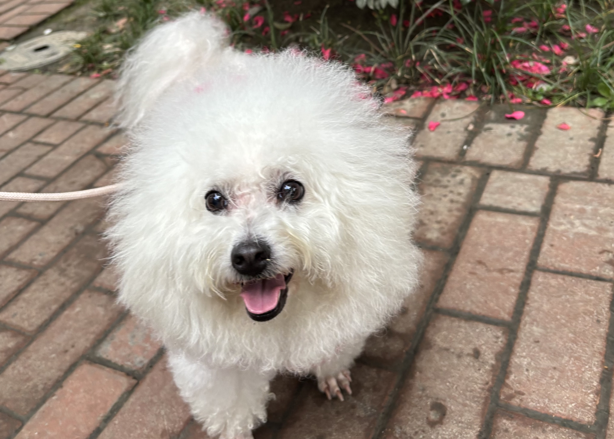
I rasterize triangles using the following procedure:
edge_fn, which determines whether a point (px, py)
lies to the left or right of a directed edge (x0 → x1, y0 → y1).
This function is used to test a point's relative position with respect to each triangle edge.
rasterize_triangle(), I begin by determining the triangle's winding order using edge_fn() on the three vertices.
If the result is 0, the vertices are collinear and no triangle exists. A positive value indicates a counter-clockwise triangle, while a negative value indicates a clockwise triangle.
inside() that checks whether a sample point lies inside the triangle based on its position relative to all three edges.
For a counter-clockwise triangle, a point is inside only if it lies on the left side of every edge
(edge_fn() ≥ 0), and the condition is reversed for clockwise triangles.
fill_pixel() for those that pass the inside-triangle test.
To improve efficiency, I only examine pixels within the triangle's bounding box—computed from the minimum and maximum x and y coordinates of the vertices—rather than scanning the entire framebuffer. This guarantees the triangle is fully rasterized while avoiding unnecessary checks on unrelated pixels.
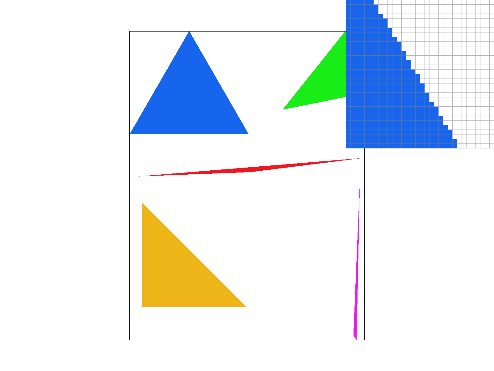
Supersampling reduces aliasing artifacts such as jagged edges, flickering, and shimmering by averaging multiple sub-pixel samples within each pixel. Instead of assigning a pixel a single color based only on its center, supersampling estimates how much of the pixel is actually covered by the triangle. For example, in test4, supersampling noticeably smooths triangle boundaries and reduces the staircase effect along the edges.
rasterize_triangle(), instead of checking only the pixel center, I test several sub-pixel sample locations inside each pixel. Each subsample is indexed using: \[(y * width + x) * sample rate + (j * n + i)\]
where n is the square root of sample_rate, and i, j indicate the subsample’s position within the pixel. A subsample is colored if it lies inside the triangle. resolve_to_framebuffer() computes the average color of all subsamples belonging to each pixel and writes that averaged value to the framebuffer. fill_pixel() so that all subsamples of a pixel are assigned the same color when drawing non-triangle primitives. The images below compare different sample rates, with the pixel inspector placed near the thin magenta triangle at the bottom right. At a sample rate of 1 (no supersampling), the triangle edges appear broken and jagged. As the sample rate increases, the triangle becomes more continuous and its boundaries smoother. This occurs because thin triangles often do not cover the exact center of a pixel. By averaging multiple sub-pixel samples, supersampling approximates the fraction of the pixel covered by the triangle, producing a gradual color transition along edges and significantly reducing aliasing.
|
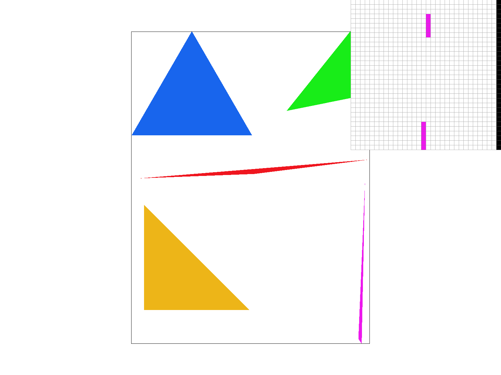 |
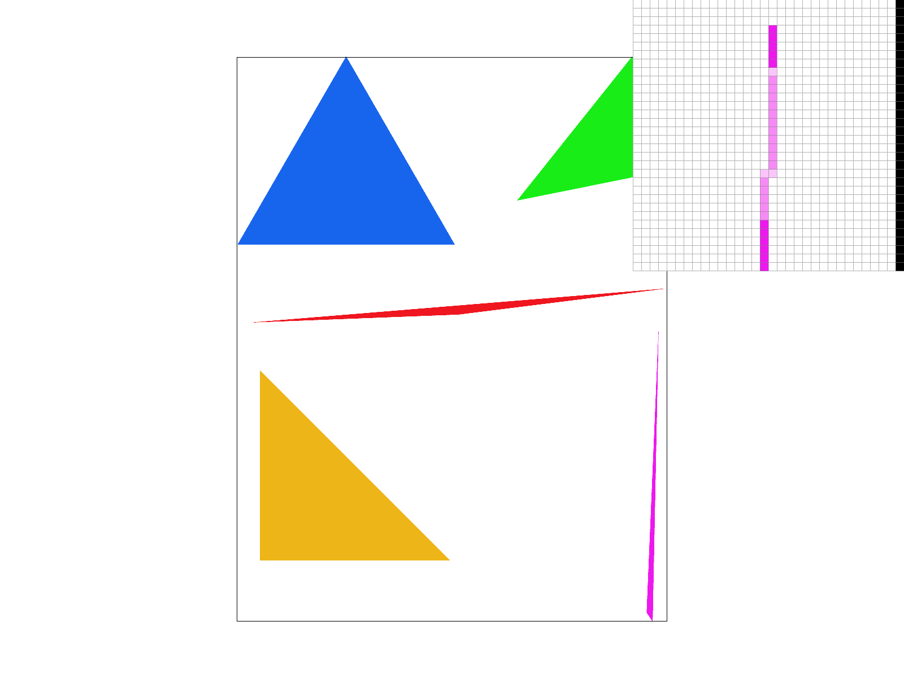 |
|
|
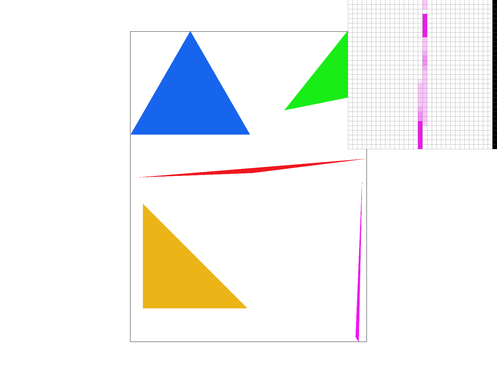 |
|
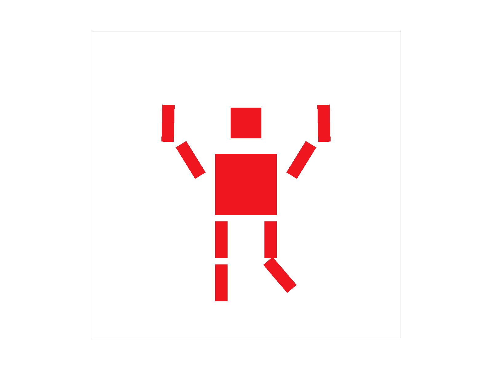 |
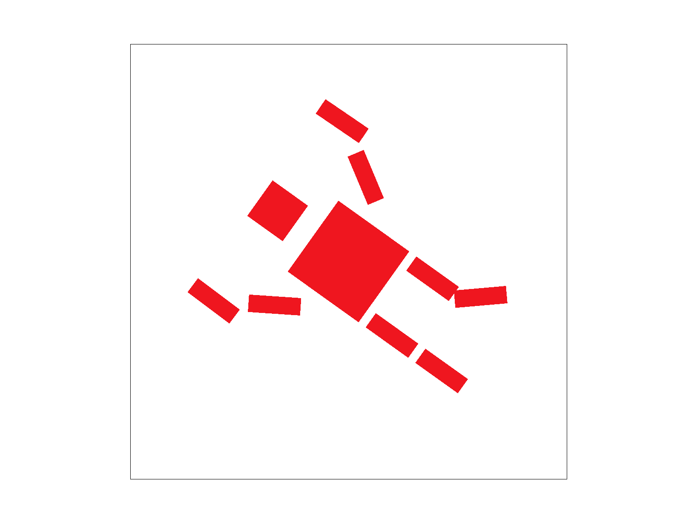 |
Barycentric coordinates are used to determine a point’s position inside a triangle. They allow us to linearly interpolate the values defined at the triangle’s vertices and are commonly used in texture mapping and color interpolation.
For each pixel, the final color is computed as a weighted average of the three vertex colors.
In the triangle example shown below, the left vertex is red, so pixels closer to that vertex appear more reddish. Pixels located between the red and green vertices but farther from the blue vertex appear yellowish due to the mixture of red and green.
The pixel near the center of the triangle receives nearly equal contributions from all three vertices and therefore appears as a balanced blend of the three colors. Using barycentric interpolation produces a triangle with smoothly varying colors across its surface.
|
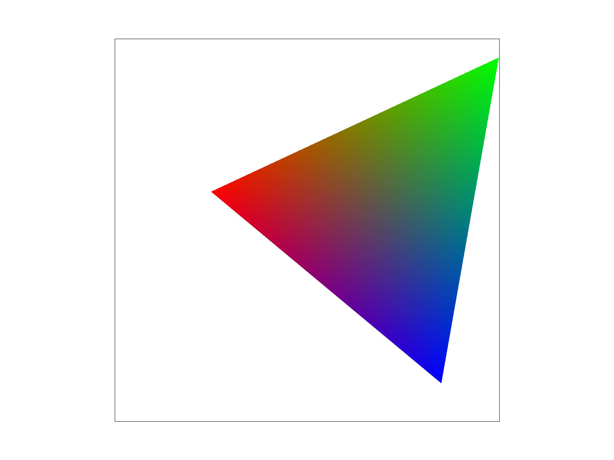 |
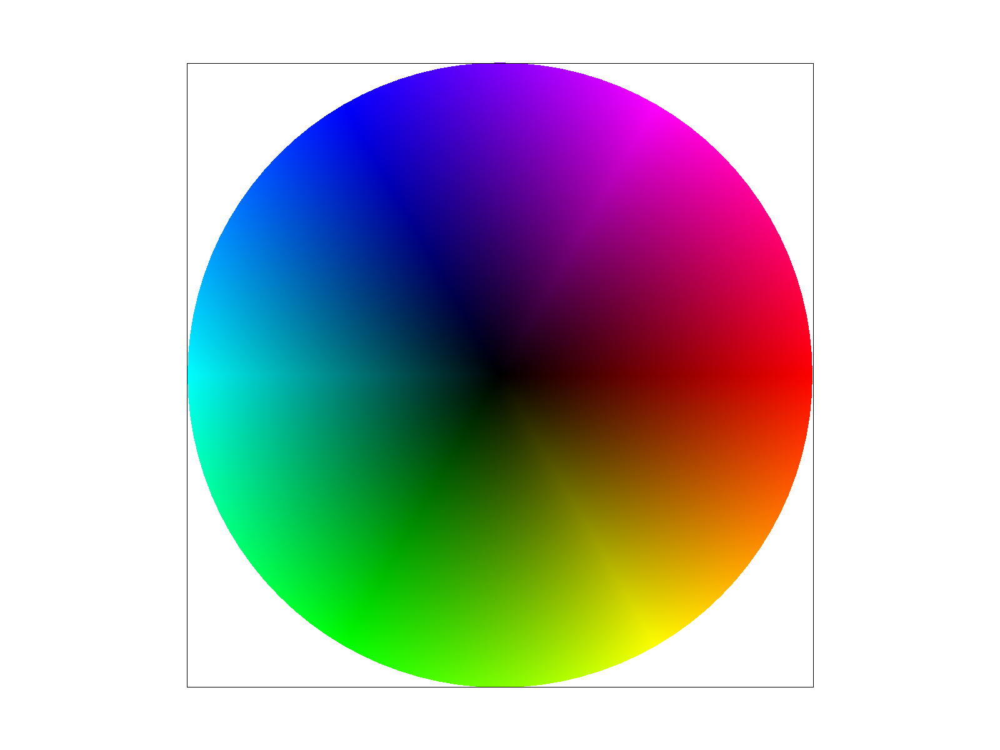 |
Pixel sampling is the process of assigning a color to each screen pixel so that a discrete grid of pixels can approximate a continuous image. In texture mapping, this involves mapping points from screen space to texture space. Using barycentric coordinates, we compute the corresponding (u, v) location in the texture for a given pixel on the screen. Once this texture coordinate is known, the pixel's color can be determined using one of the following methods:
These two methods differ in how they compute the final color. The screenshots below compare nearest and bilinear interpolation with sample rates of 1 and 16. Bilinear interpolation produces smoother color transitions and reduces the visible grid pattern because it blends neighboring texels. The difference is especially noticeable at a sample rate of 1, since higher sample rates already average multiple samples through supersampling.
The difference becomes even more noticeable when the image is minified (downsampled). In this situation, a large area of the texture is compressed onto a very small region of the screen, meaning that many texels correspond to a single screen pixel.
With nearest neighbor sampling, the renderer selects only one texel to represent the entire pixel. Small changes in camera position or sampling location can cause a different texel to be chosen, which leads to abrupt color changes between adjacent pixels. As a result, the image exhibits jagged edges, flickering, and shimmering patterns.
Bilinear interpolation, on the other hand, samples and blends the four nearest texels. Instead of relying on a single texel, it computes a weighted average based on the sample's fractional position within the texel square.
This produces smoother color transitions and reduces sudden changes between neighboring pixels, making the texture appear more stable and visually continuous even when it is scaled down.
|
|
|
|
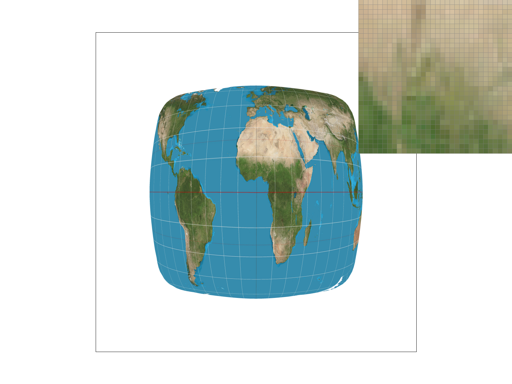 |
|
Level sampling improves texture mapping by choosing an appropriate texture resolution from a mipmap pyramid according to how quickly texture coordinates change across the screen. A mipmap is created by repeatedly downsampling the original texture image; for example, a
1024 x 1024 texture becomes 512 x 512, and so on. The renderer selects the level whose texel size best matches the size of a screen pixel.
In my implementation, I computed the derivatives du/dx, du/dy, dv/dx, and dv/dy to estimate how much of the texture is covered by a single screen pixel.
Then, in the get level() helper function, I scaled the derivatives by texture screen size to get the mipmap level. The selected level was then passed to the sample() function when determining the pixel color.
There are three level-sampling methods.
get level() Supersampling operates in screen space. Increasing the sample rate requires more computation and memory because multiple sub-pixel samples must be evaluated for each pixel, but it effectively reduces jagged edges and staircase artifacts along geometry boundaries.
Level sampling determines which texture resolution to use. L_ZERO is the fastest and simplest method but produces noticeable shimmering when textures are viewed at a distance. L_NEAREST and L_LINEAR reduce this aliasing because the texture resolution better matches the screen pixel size, resulting in smoother and more stable colors.
Pixel sampling occurs after a mipmap level is selected. P_NEAREST is fast and inexpensive because it uses only a single texel, but it introduces blocky artifacts. P_LINEAR (bilinear interpolation) averages the four surrounding texels, which is slower but significantly reduces visible aliasing and produces smoother transitions.
Overall, increasing sampling quality—through higher supersampling rates, bilinear filtering, or mipmap interpolation—reduces aliasing at the cost of increased runtime and memory usage. Choosing an appropriate combination of these techniques depends on balancing performance and visual quality.
The four images below show my dog rendered with different sampling settings. At normal viewing distance the differences are subtle, but when zooming in using the pixel inspector near my dog's right eye, the combination of P_LINEAR and L_LINEAR produces the smoothest color transitions and the most natural appearance.
|
|
|
|
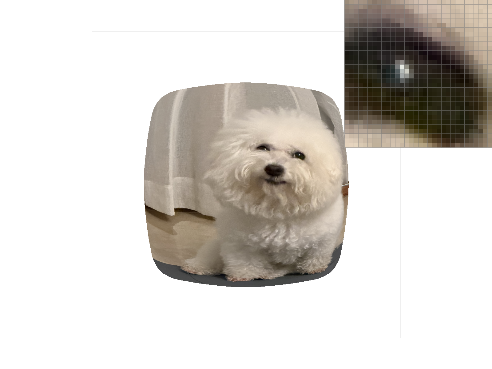 |
|